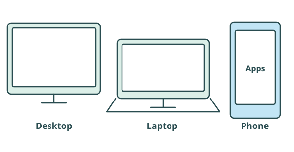
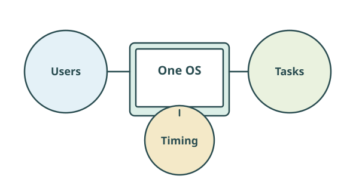
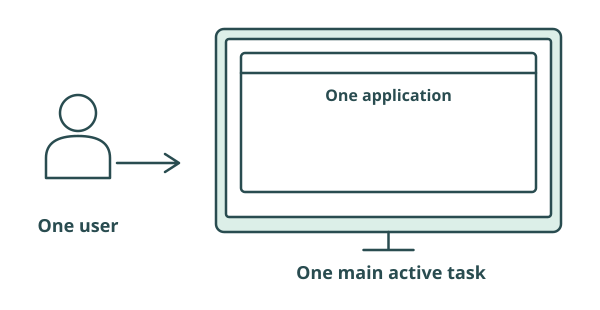
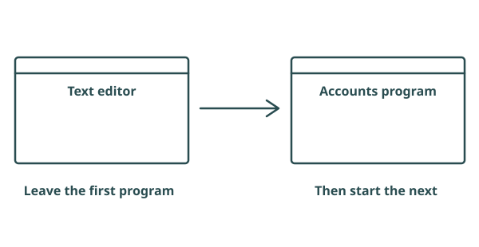
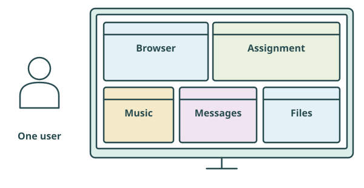
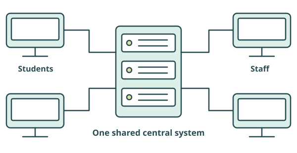
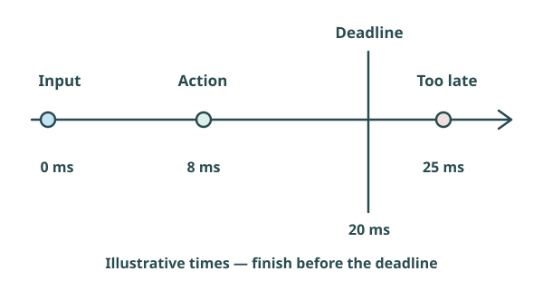
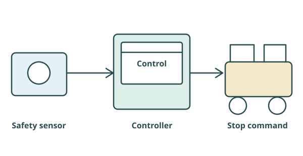
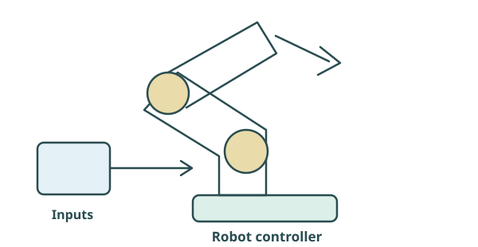

Start Here
What does “operating system type” mean?

Windows
macOS
Linux
Android
iOS
These are familiar operating-system names. Operating systems can also be classified by how they are designed to be used.
Users
How many users is the system designed to support?
Tasks
How many tasks does it need to manage?
Timing
Does an operation need to happen within a guaranteed time?
Start Here
A simplified model

These classifications are simplified models describing important characteristics. Modern operating systems may fit more than one description.
First learn what each type means. Then explore how those descriptions can overlap.
One User · One Task
Single-user single-task

An operating system designed primarily for one user to perform one main task at a time.
Typical strengths
Simple, straightforward operation with low resource requirements.
Typical limits
Limited flexibility; unsuitable for workloads needing several active applications.
Classroom example
Classic MS-DOS is a useful simplified example. A dedicated or embedded device is not automatically a single-task OS.
One User · One Task
One user, one main application

- Run the text editor
- Leave the editor
- Start the accounts program
The user must leave the first application to do the next job. One user + one main task fits single-user single-task.
The clue is the way the system is designed to work—not simply that only one application happens to be open right now.
One User · Several Tasks
Single-user multitasking

Designed primarily for one active user, while allowing several tasks or applications to run during the same period.
One user does not mean one task
The user can switch between applications while other work continues.
Familiar examples
A Windows personal PC, macOS laptop or Android/iOS smartphone commonly fits this broad exam description in personal use.
One User · Several Tasks
A familiar multitasking example
Writing an assignment
Researching in a browser
Playing music
Teams/Discord notifications
Downloading a file
Best description: single-user multitasking, because one student uses several applications and tasks during the same period. This does not require every task to execute at exactly the same instant.
Many Users · Shared Resources
Multi-user operating systems

Designed to allow multiple users to access and share the resources of the same central system.
Shared use
Concurrent access, separate accounts and permissions let many users work with central services.
Managed use
Resource sharing, user isolation and central administration help keep different users’ work organised.
Examples in context
Linux/Unix servers, Windows Server, university systems and cloud-hosted shared systems can serve many users.
Many Users · Shared Resources
College server example
Hundreds of student accounts
Staff accounts
Shared folders
Different permissions
Central services
Concurrent access
Best description: multi-user, because many users share the same central resources during the same period.
Accounts alone are not enough
Alice uses a laptop, logs out, then Bob uses it later. That is not the same scenario as many students accessing a college server concurrently. Multiple laptop accounts do not automatically make multi-user the best answer.
Timing Requirements
Real-time operating systems

A real-time operating system is designed so important operations complete within defined timing constraints.
Predictable response
The important operation must meet its required deadline; being fast on average is not enough.
Real-time does not just mean “very fast”
A very responsive personal computer is not necessarily designed to guarantee a particular response time.
Timing Requirements
A ride safety controller

A safety sensor detects a dangerous condition. The controller must issue a stop command within 20 ms.
- Sensor event: 0 ms
- Controller processes input
- Command issued: 8 ms
- Required deadline: 20 ms
These times are invented for the example. A response at 25 ms would miss the requirement even if most responses were very quick. The defining feature is meeting the deadline predictably.
An RTOS can support this requirement, but the complete hardware and software system must also be designed to meet it.
Connect the Ideas
How the classifications relate
Classification by users and tasks
One main user
→ One main task →
Single-user single-task
One main user
→ Multiple tasks →
Single-user multitasking
Many users
→ Share central resources →
Multi-user
Users/tasks describe who shares the system and what it manages. Real-time describes when important work must finish.
Compare
Comparing the four types
| OS type | Defining feature | Typical scenario | Strength | Trade-off |
|---|---|---|---|---|
| Single-user single-task | One user; one main task at a time | Classic MS-DOS-style application use | Simple; low resource needs | Limited task flexibility |
| Single-user multitasking | One main active user; several tasks | Student writing while researching | Flexible personal work | Active tasks compete for available resources |
| Multi-user | Many users share central resources | College file server | Shared services and central administration | Needs careful permissions and resource management |
| Real-time | Important work meets defined deadlines | Safety controller with a timing requirement | Predictable timing | Timing requirements constrain the system design |
Theory and Reality
The exam model
For the exam, you are expected to understand these four classifications.
Single-user single-task
One user; one main task at a time.
Single-user multitasking
One main active user; several tasks.
Multi-user
Many users share central resources.
Real-time
Important work meets defined deadlines.
Exam scenarios usually emphasise one characteristic. Give the classification that best describes that requirement, even if other characteristics are also present.
Theory and Reality
Modern operating systems overlap
Windows 11 personal laptop
One main active user
Several applications
Multiple accounts
Best description here: Single-user multitasking. In normal personal use, one user’s multiple tasks are the important feature.

Linux server
Many users
Several tasks
Background services
Best description here: Multi-user. In a shared-server scenario, central resources are used concurrently.

RTOS robot controller
Several tasks
Multiple inputs
Defined deadlines
Best description here: Real-time. The timing requirement defines this scenario, even with several tasks.
Smartphone
Primary user
Foreground/background tasks
Profiles on some systems
Best description here: Single-user multitasking. This is the best general personal-use description; capabilities vary by system.
These classifications describe important characteristics—not completely separate kinds of software. An OS brand by itself does not determine the best answer.
Choosing the Type
Why the scenario matters
Defined deadline
A required response time → real-time.
Shared central resources
Many users connected during the same period → multi-user.
One user, several applications
Multiple active tasks for that user → single-user multitasking.
One user, one main task
Designed to run one main application at a time → single-user single-task.
Identify the characteristic the question emphasises. If several clues appear, explain which requirement makes your classification most relevant.
Exam Technique
How to answer a classification question
- Read the scenario
- Find the strongest clue
- Identify the characteristic
- Name the OS type
- Justify with evidence
This system is best described as ______ because ______.
Shared system
This is multi-user because many students access the same central server and share its resources concurrently.
Timing requirement
This is real-time because the controller must respond within a defined time limit.
Worked Example
Worked scenario: college file server
Hundreds of student and staff accounts use central storage. Permissions control shared folders, and many users connect during the same period.
- Evidence: concurrent shared access
- Characteristic: many users share one system
- Classification: multi-user
- Justification: central resources serve many users
Weak
“Multi-user.” This names the type but does not explain the evidence.
Stronger
“Multi-user because students and staff access shared resources on the same central system at the same time.”
Classroom Activity
Classify the scenario
Choose the best classification and the evidence that supports it. Check each pair for feedback.
College computer-room PC
A student writes in Word, researches in a browser, plays music and receives messages.
College file server
Hundreds of users access shared files and services on the same server at the same time.
Theme-park controller
A safety sensor must trigger the controller’s response within a defined time limit.
Simple older computer
The system is designed for one user to run one main application at a time; they must exit it before starting another.
Personal laptop with three accounts
Only one person normally uses the laptop at a time, running several applications. Other people log in later.
Robot with several control tasks
The controller handles several inputs and tasks, but its motor and safety responses must meet strict deadlines.
Personal smartphone
One person listens to music while using navigation and receiving messages. No guaranteed response deadline is stated.
University computing system
Researchers log in concurrently from different devices to use the same central computing resources under separate permissions.
Exam Traps
Common exam mistakes
“Real-time means really fast”
It means meeting defined timing constraints predictably.
“Multiple accounts means multi-user”
Look for many users sharing central resources during the same period.
“One user means one task”
One person can use several applications: single-user multitasking.
“The categories cannot overlap”
Modern systems can have several characteristics. Choose the relevant one.
Giving only a label
Explain why the evidence supports the classification.
Recognising only the brand
Use the scenario’s defining requirement, not a memorised brand-to-type rule.
Quiz
Check your understanding
Answer all 12 questions, then check your score. Choices and your best score save in this browser.
Apply Your Knowledge
Exam-style practice
Apply the definitions to the scenario. Write your response, then compare it with the guide. Draft answers save automatically in this browser.
Question 1
Explain why a normal college desktop PC used by one student for research, writing and music is typically classified as single-user multitasking.
Show answer guide
- Define one active user with several tasks during the same period.
- Apply the definition to research, writing and music; distinguish one user from one task.
Question 2
Explain why a theme-park safety controller may require a real-time operating system.
Show answer guide
- The safety response must meet a defined timing constraint.
- Predictable response matters; a late response can fail the requirement even if the average is fast. Use the controller scenario to justify the classification.
Question 3
A college is choosing an OS for a central file server used by many students and staff at the same time. Discuss why a multi-user OS is appropriate.
Show answer guide
- Many users need concurrent access to central resources.
- Accounts, permissions and user isolation support separate users and appropriate shared folders.
- Central administration and resource sharing are useful, but require careful management. Link these points to the college rather than merely listing features.
Question 4
A modern OS supports several accounts and many applications. Analyse why its most relevant classification may differ between personal-laptop and shared-server scenarios.
Show answer guide
- Several characteristics can coexist; installed accounts alone do not determine the answer.
- A laptop used by one person at a time for several applications fits single-user multitasking.
- Many users accessing central resources concurrently supports multi-user.
- Compare the scenarios and justify each classification with evidence; do not treat an OS brand as a fixed category.